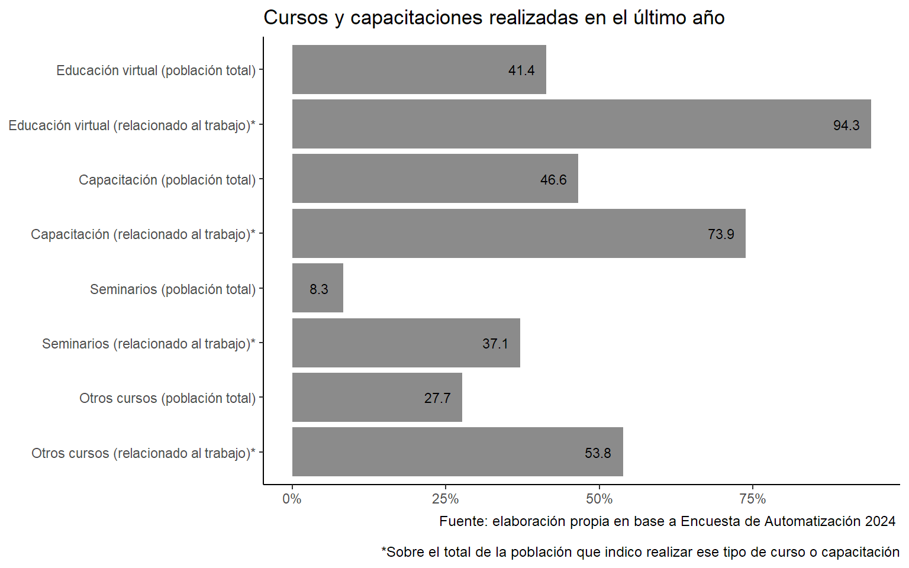
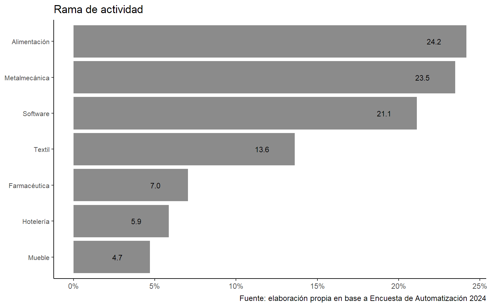
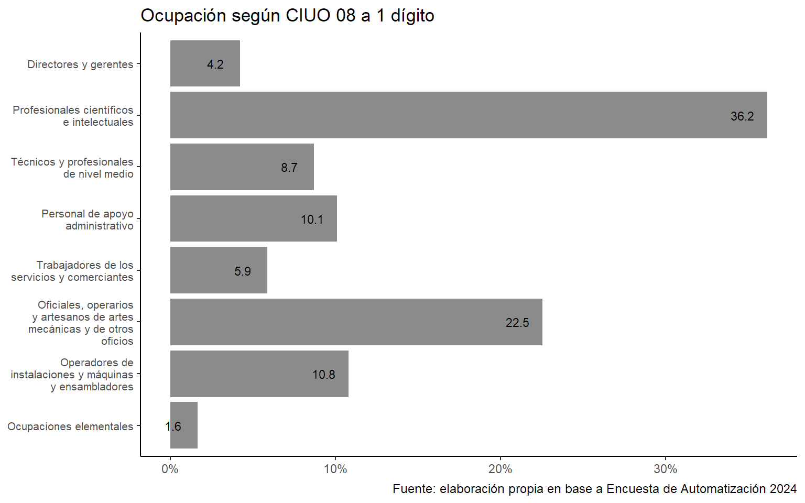
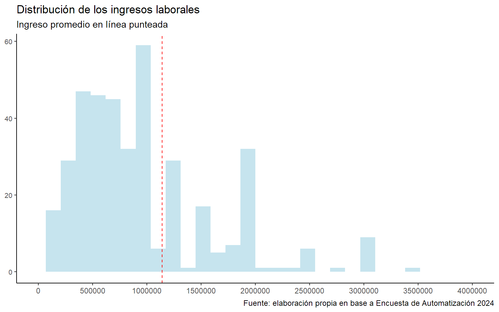
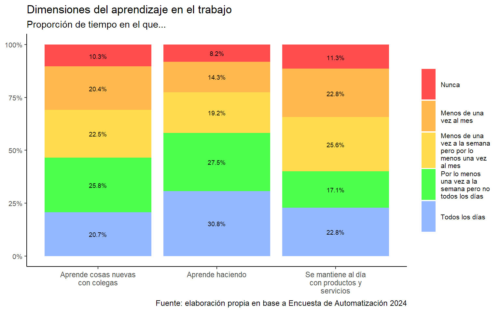
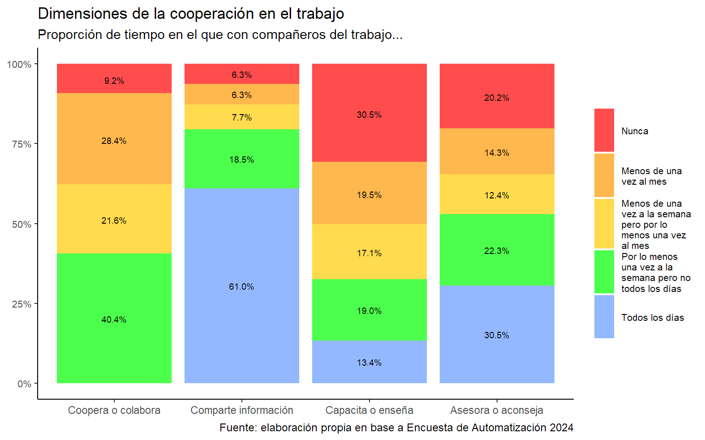
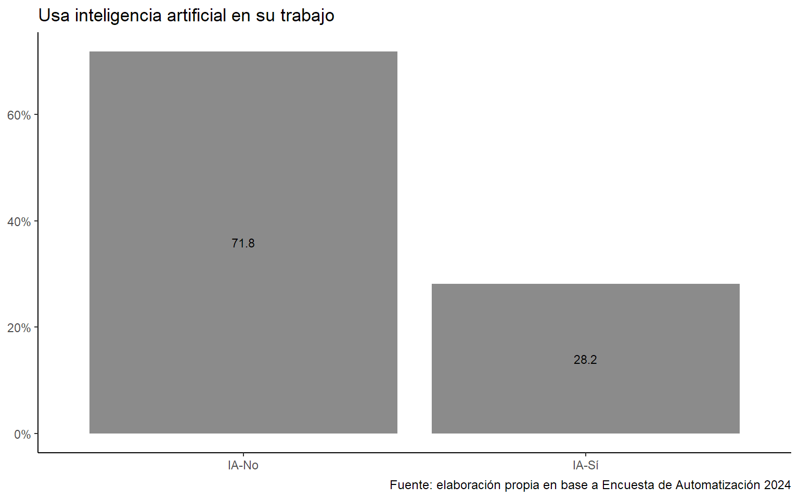
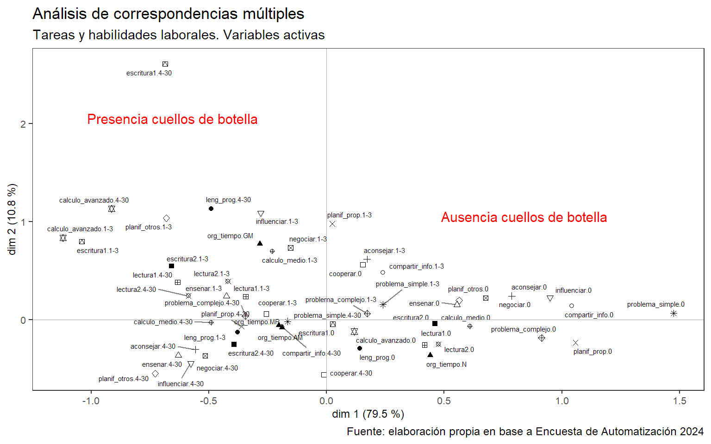
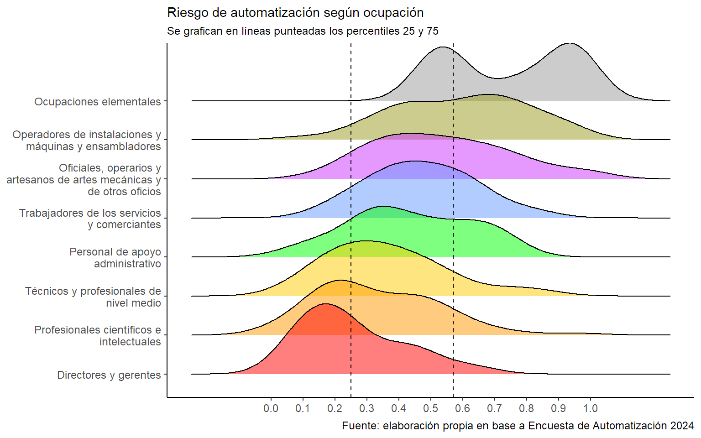

| Variable | Label | Stats / Values | Freqs (% of Valid) | Graph | Missing | ||||||||||||||||||||||||||||||||||||||||||||||
|---|---|---|---|---|---|---|---|---|---|---|---|---|---|---|---|---|---|---|---|---|---|---|---|---|---|---|---|---|---|---|---|---|---|---|---|---|---|---|---|---|---|---|---|---|---|---|---|---|---|---|---|
| sex [factor] |
|
|
 |
0 (0.0%) | |||||||||||||||||||||||||||||||||||||||||||||||
| Edad [numeric] | Edad del entrevistado/a |
|
52 distinct values |  |
0 (0.0%) | ||||||||||||||||||||||||||||||||||||||||||||||
| sitcony [factor] |
|
|
 |
0 (0.0%) | |||||||||||||||||||||||||||||||||||||||||||||||
| hij [numeric] | ¿Cuántos hijos/as tiene? |
|
|
 |
7 (1.6%) | ||||||||||||||||||||||||||||||||||||||||||||||
| obs [factor] |
|
|
 |
0 (0.0%) | |||||||||||||||||||||||||||||||||||||||||||||||
| pais [factor] |
|
|
 |
1 (0.2%) | |||||||||||||||||||||||||||||||||||||||||||||||
| local [factor] |
|
|
 |
0 (0.0%) | |||||||||||||||||||||||||||||||||||||||||||||||
| nivel_ed_2 [factor] |
|
|
 |
0 (0.0%) |
Generated by summarytools 1.0.1 (R version 4.4.2)
2024-12-19
En esta sección calculamos el porcentaje de cursos, capacitaciones, etc., que realizaron los encuestados en términos generales y en aquellos casos arfirmativos, se observan cuántos estuvieron vinculados al trabajo.












En este análisis se indaga la relación entre las dimensiones laborales identificadas como cuellos de botella a la automatización.
mrate cum.mrate
1 79.4890076058 79.48901
2 10.8181440740 90.30715
3 2.4920914188 92.79924
4 2.2110207028 95.01026
5 1.3913459845 96.40161
6 1.0637461846 97.46536
7 0.8705776814 98.33593
8 0.6240351673 98.95997
9 0.4662682550 99.42624
10 0.3414508874 99.76769
11 0.2015922991 99.96928
12 0.0170268904 99.98631
13 0.0078242781 99.99413
14 0.0052021388 99.99933
15 0.0006664318 100.00000


Se construye un índice de riesgo de automatización, a partir de las coordenadas factoriales resultantes de la primera dimensión del análisis de correspondencias múltiples realizado. Luego ese índice fue estandarizado para que varíe de 0 a 1, donde 0 es el mínimo riesgo y 1 el máximo.
Min. 1st Qu. Median Mean 3rd Qu. Max.
0.0000 0.2582 0.4219 0.4297 0.5702 1.0000 


